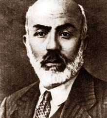

Mehmet Akif Ersoy (1873-1936)

Ýstiklal Marþý'nýn yazarý olmasýndan dolayý "Milli Þairimiz" olarak tanýdýðýmýz Mehmet Akif, Ýstanbul baþta olmak üzere, vatanýn dört bir yanýnýn iþgal edildiði bir zamanda yazdýðý þiirleriyle ümitsizliðe yer olmadýðýný haykýrdý. Darü'l-Hikmeti'l-Ýslamiye'de Bediüzzaman Hazretleri ve diðer ünlü din alimleriyle beraber çalýþtý. Ýstiklal Savaþý boyunca insanlarýmýzý heyecana getiren yazý, þiir ve hutbeleriyle önemli katkýlarda bulundu. Hayatý boyunca izzet ve þerefinden ödün vermeyerek örnek bir hayat yaþadý.Mehmet Akif, 1873 yýlýnda Ýstanbul'un Fatih ilçesi Sarýgüzel Mahallesinde doðdu. Babasý Fatih Medresesi Müderrislerinden Temiz lakaplý Mehmed Tahir Efendidir. Annesi Buharalý Mehmet Efendinin kýzý, Emine Þerife Hanýmdýr. Takva sahibi ebeveynlerin evladý olarak dünyaya gözlerini açan çocuða, babasý tarafýndan Ragif ismi verildi. Tahir Efendi Ebced hesabý düþerek bu ismi verdi. Ancak, gerek ev halký gerekse mahalleli bu ismi anlayamadýklarýndan, babasý hariç, herkes tarafýndan Akif olarak çaðrýldý.
Eðitimine, dört yaþýnda Fatih Emir Buhari mahalle Mektebine giderek baþladý. Ýki yýl sonra eðitim bakanlýðýna baðlý ibtidai mektebine gitti. Bu arada babasýndan Arapça derslerini aldý. Buradaki üç yýllýk eðitimin sonunda Fatih Merkez Rüþtiyesine girdi. Bu okula devam ederken ayný zamanda, ikindiden sonra Fatih Camiine giderek burada Esad Dede'den; Hafýz Divaný, Gülistan ve Mesnevi derslerini aldý. Bu eðitimi sýrasýnda Türkçe, Arapça, Farsça ve Fransýzca dillerini öðrenerek, bu alanda sýnýf birincisiydi. Þiiri çok severdi. Ýlk okuduðu þiir kitabý, Fuzuli'nin Leyla ve Mecnun'udur.
Ýdadiyi bitirdikten sonra Mülkiye mektebine girdi. Bir süre sonra bu okuldan ayrýlarak yeni açýlmýþ bulunan Baytar (Veterinerlik) mektebine girdi. Þiire olan meraký burada da devam etti. Okulunu birincilikle bitirdi. Eðitiminin devam ettiði sýralarda iki acý olay yaþadý. Önce babasý vefat etti, bir süre sonra da evleri yandý. Babasý vefat ettiði zaman on dört yaþýnda idi. Okulunu bitirdikten sonra Ziraat Bakanlýðýnda iþ hayatýna baþladý (1893). Memurluk merkezi bakanlýk olmakla birlikte Rumeli, Anadolu ve Arabistan'da bir çok yeri dolaþarak hayvanlardaki bulaþýcý ve salgýn hastalýklar konusunda insanlarý bilgilendirmeye çalýþtý.
Ýþ hayatýna atýldýktan sonra Tophane-i Amire veznedarý Mehmed Emin Beyin kýzý Ýsmet Hanýmla evlendi. Akif'in vefatýna kadar devam eden bu evlilikten altý çocuklarý dünyaya geldi. Baþladýðý memurluk hayatý da, istifa edip ayrýldýðý, 1913 yýlýna kadar devam etti. Ancak, resmi görevler almaya devam etti. Mektep ve medreselerde öðretmenlik yaptý. 25 Aðustos 1918 tarihinde kurulan Darü'l-Hikmeti'l-Ýslamiye Cemiyetinin baþkatipliðine atandý.
Bu cemiyet, bir tür Ýslam Akademisi mahiyetinde idi. Üyeleri arasýnda, Bediüzzaman Said Nursi, Ahmed Cevdet, Hafýz Ýsmail Hakký, Muhammed Hamdi gibi, dönemin meþhur ilim ve fikir adamlarý yer aldý. Cemiyetin gayesi; Osmanlý ve Ýslam Aleminde ortaya çýkan dini meseleleri halletmek ve Ýslam'a yapýlan hücum ve saldýrýlara cevap vermekti. Gerek vatandaþlar gerekse yabancýlar tarafýndan sorulan sorular komisyonlarda görüþülerek resmen cevap verilmekteydi. Özellikle basýn yoluyla yapýlan hücumlara cevap verilmeye çalýþýldý. Diðer taraftan üyeler muhtelif gazetelerde makaleler yayýnlayarak, ferdi olarak da Ýslam'a hizmet etmeye çalýþýyorlardý.
Cemiyetin faaliyetlerinden birisi de özellikle insanlarý ikaz etmek maksadýyla neþredilen beyannamelerdir. Haya ve namus hakkýnda neþredilen beyannamede; ahlak kanunlarýna, en ince noktalarýna varýncaya kadar mutlak itaat etmenin, insanlarýn en önemli vazifesi olduðuna iþaret edildi. Ahlak kanunlarý içinde yer alan en önemli hasletlerden birinin haya olduðu, bu ve benzeri hasletlerden uzaklaþmanýn insaný insanlýðýndan uzaklaþtýracaðýna vurgu yapýldý. Çocuk düþürme ile ilgili olarak yayýnlanan beyannamede, bu hareketin þeriat nazarýnda cinayet olduðu belirtildi. Bu cinayetin hafife alýnmasý, hiçbir günahý olmayan bir masumun kendi eliyle boðmasýnýn þefkatli bir anneye asla yakýþmadýðý belirtildi. Bunlarýn dýþýnda memleket gençliði ve ahlaksýzlýk konularýnda da beyanname neþredildi.
Cemiyetin üyelerinden Akif ile Bediüzzaman'ýn daha önceden tanýþýp tanýþmadýklarý hakkýnda elimizde fazla bilgi yoktur. Bilinen, üyelerin toplantýlarla bir araya geldikleri ve güncel meseleler hakkýnda sohbet ettikleridir. Üyelerden birisi de Eþref Edip'tir. 1952 yýlýnda kaleme aldýðý makalesinde, "Üstadla tanýþmamýz kýrk seneyi geçti. O zamanlar her gün idarehaneye gelir; Akifler, Naimler, Feridler, Ýzmirli'lerle birlikte tatlý tatlý müsahabelerde bulunurduk. Üstad, kendine mahsus þivesiyle yüksek ilmi meselelerden konuþur; onun konuþmasýndaki celadet ve þehamet bizi de heyecanlandýrýrdý" (Tarihçe-i Hayat, s. 540) þeklinde ifadeler kullandý. Gerek Akif'in gerekse Bediüzzaman'ýn birbirleri hakkýndaki ifadelerinden aralarýnda sýcak bir ilgi ve muhabbetin olduðu anlaþýlmaktadýr. Akif, deðerli ediplerin bir arada bulunduðu bir mecliste, "Victor Hugolar, Shakspeare'ler, Descartes'lar edebiyatta ve felsefede Bediüzzaman'ýn bir talebesi olabilirler" (Sözler, s. 717) sözleriyle takdirlerini bildirmektedir. Buna karþýlýk, Risale-i Nur'un muhtelif yerlerinde de büyük þairin adý ve þiirlerinden alýntýlar yer almaktadýr.
Bediüzzaman; "Hem merhum Fetva Emini Ali Rýza ve merhum Ahmed Þirani ve merhum Þevket Efendi ve merhum Mehmed Akif gibi insaflý, Risale-i Nur u fevkalade takdir ve tahsin eden o muhterem ve merhum zatlarýn hatýrý için, biz Ýstanbul hocalarýna dostuz, onlardan gücenmeyiz..." (Emirdað Lahikasý, s. 144 ) ifadelerine yer vermektedir. Akif'in, "O nuru gönder ilahi, asýrlar oldu yeter! / Bunaldý milletin afak'ý, bir sabah ister. "Doðrudan doðruya Kur'an'dan alýp ilhamý, / Asrýn idrakine söyletmeliyiz Ýslam'ý" þeklindeki niyaz ve arzularý Risale-i Nur'la hayat buldu. Akif'in arzusu, ilhamýný direk Kur'an'dan alan Risale-i Nur'la gerçekleþti.
Ýkinci Meþrutiyet Akif'in hayatýnda bir dönüm teþkil etmektedir. 1908 tarihinden itibaren þiirlerini Sýrat-ý Müstakim dergisinde yayýnlamaya baþladý. Mondros Mütarekesi'nden (1918) sonra Balýkesir'e giderek, Milli Mücadeleyi teþvik edici hitabelerde bulundu. BMM'ne Burdur mebusu olarak katýldý. Ankara'da Taceddin Dergahýnda çalýþtý. Ýstiklal Marþýný yazdý. Meclisin taahhüt ettiði 500 lirayý orduya hediye ederek almadý. 1923'te Mýsýr'a gitti. Hastalanýnca Ýstanbul'a döndü ve 27 Aralýk 1936 Pazar akþamý, altmýþ üç yaþýnda hayata gözlerini yumdu.
Eserleri
Örnek bir hayat yaþayan Akif, eserleri vasýtasýyla büyük bir miras býraktý. Ýstiklal Marþý baþlý baþýna büyük bir eserdir. Ýlk þiiri "Kur'ana Hitab" adýný taþýmakta olup, 1895 yýlýnda Mekteb Mecmuasý'nda yayýnlandý. Ýki yýl aradan sonra tekrar yazmaya baþladý. Ancak, muhtelif konularda Ýkinci Meþrutiyetten önce yazdýðý þiirlerini Safahat'a almadý ve neþretmedi. Yazmýþ bulunduðu eserleri "Safahat" adlý kitapta topladý. Ayný zamanda ilk eserinin adý da 'Safahat'týr. Yedi kitaptan oluþmakta ve bunlardaki mýsra sayýsý on iki bini bulmaktadýr. Bu yedi kitabýn diðer altý tanesi; bin mýsradan oluþan 'Süleymaniye Kürsüsünde', beþ yüz mýsradan oluþan 'Hakkýn Sesleri', bin sekiz yüz mýsradan oluþan 'Fatih Kürsüsünde', bin altý yüz mýsradan oluþan 'Hatýralar', iki bin beþ yüz mýsradan oluþan 'Asým' ve bin beþ yüz mýsradan oluþan 'Gölgeler'dir. Bunlarýn dýþýnda Sýrat-ý Müstakim ve Sebilü'r-Reþad'da yayýnlanýp da Safahat'a almadýðý þiirleri de vardýr. Ýstiklal Marþý, Bülbül, Ordunun Duasý ve Çanakkale gibi bazý þiirleri bestelenmiþtir. Milletine armaðan etmiþ olmasý hasebiyle, Ýstiklal Marþýný Safahat'a almadý.
Akif'in, kendisine verilmek suretiyle üstlendiði görevlerden bir tanesi Kur'an-ý Kerim'i tercüme etmekti. Cumhuriyetin ilk yýllarýnda, Diyanet Ýþleri Baþkanlýðý tarafýndan kendisine verilen bu görev için adeta inzivaya çekildi. Yedi yýl boyunca bu alanda emek sarf etti. Ancak, yaptýðý iþten ve yazdýklarýndan memnun kalmadý. Aldýðý vazifenin aðýr mesuliyetini sürekli omuzlarýnda hissetti. Bütün varlýðýný vermesine raðmen bu iþin azameti karþýsýnda eriyip gitti. Sonunda iyi yapamadýðý kanaatine vararak bu iþe son verdi. O ana kadar yazdýklarýný beðenmeyerek imha etti. Bilahare bu görev Elmalýlý Hamdi Beye verildi (Safahat, Ýstanbul 1979, s. XXI).